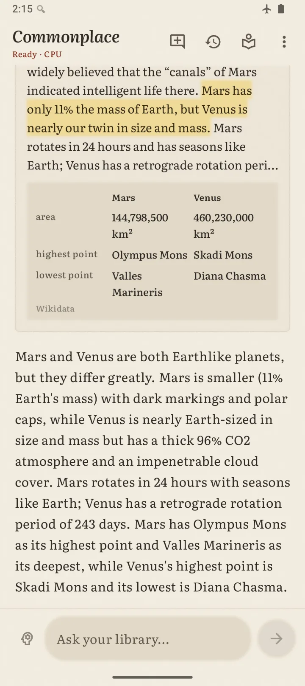
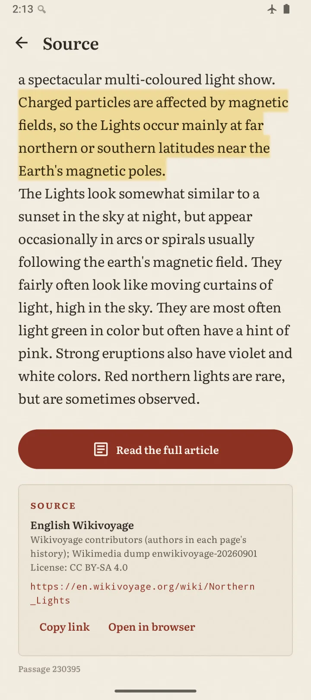
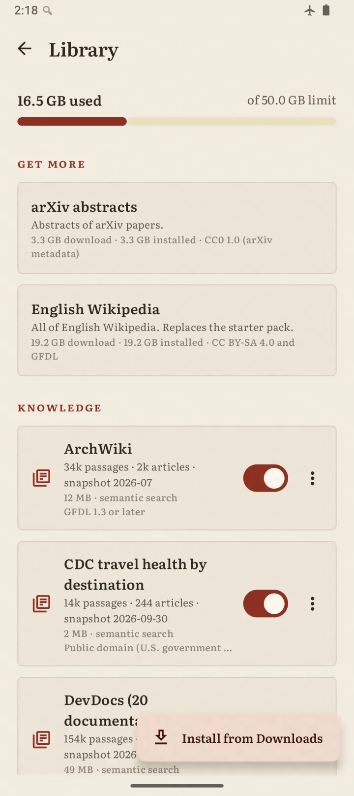
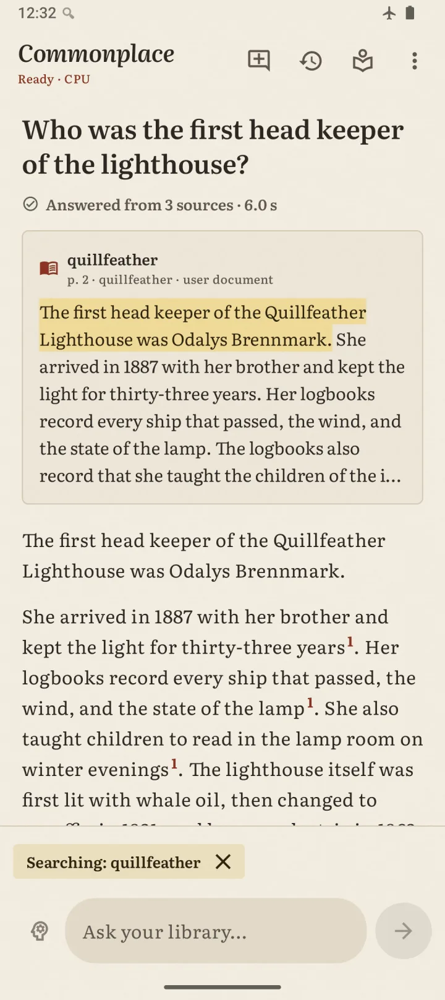

Ask Wikipedia in airplane mode.
A free Android app that answers from Wikipedia stored on your phone. It cites every source and never goes online.1
Android 12 or later, a 64-bit ARM phone and 8 GB of RAM. No Google Play Services. Open source under Apache-2.0.
… gas molecules in the earth's upper atmosphere, energising them and creating a spectacular multi-coloured light show. Charged particles are affected by magnetic fields, so the Lights occur mainly at far northern or southern latitudes near the Earth's magnetic poles. …
- subclass of
- astrophysical process, optical phenomenon, electrometeor
The northern lights are caused by charged particles from the Sun that interact with Earth's magnetic field.1,2,3,5 These particles become trapped in the magnetosphere and travel toward the Earth's magnetic poles, where they collide with atoms in the upper atmosphere, producing the visible glow.1,3
Every claim points to a passage.
The best passage shows up first, with the key sentence highlighted. Then a small AI model writes the answer and numbers each claim.
Tap a number to open the passage, with its credit and its license. When an answer has a number that the evidence does not have, the app underlines that sentence, so you know what to check.2 Comparisons put facts from Wikidata side by side.
This page works the same way. Tap a red number to see where a claim comes from.
- 2
It underlines a sentence when the evidence does not have one of its numbers.
README, Design choices


Nothing leaves the phone.
You do not have to trust a setting. Commonplace does not ask Android for the internet permission, so Android blocks every connection.1
Your questions, your library and the AI model stay on the phone. You download the library once with your browser, and the app imports it from the Downloads folder. Voice input and read aloud run on the phone too. A release cannot ship with the permission: the release script stops if it appears.3
To check it yourself, turn on airplane mode. Or open Settings, then Apps, then Commonplace, then Permissions.
6<uses-permission android:name="android.permission.INTERNET" tools:node="remove" /> 7<uses-permission android:name="android.permission.ACCESS_NETWORK_STATE" tools:node="remove" /> 9<uses-permission android:name="android.permission.RECORD_AUDIO" />
- 1
INTERNET … tools:node="remove"
AndroidManifest.xml, lines 6 and 7 - 3
INTERNET permission in the release APK
scripts/release.sh, lines 54 and 55
The reading happens before you ask.
The library is prepared
A computer reads Wikipedia, Wikidata and other open reference works. It splits them into short passages and builds search indexes. You download the result once, over Wi-Fi.
The phone only looks things up
When you ask, the app finds the best passages in about a second. A small AI model then reads only those passages and writes a short answer with citations.
From question to answer
Median times on a Pixel 10, from the moment you tap send.
- 4
First word median 1.34 s, total median 4.23 s
for Gemma andFirst word median 6.02 s, total median 10.0 s
for Ling: 62 questions typed in the app on a warm phone, with a test build of 0.4.0. Ling's full answer falls past the end of this scale. The best-passage times come from earlier builds. docs/BENCHMARKS.md, Summary
Only the Pixel 10 runs Gemma on its Tensor chip.4 Other phones answer on the CPU with Ling-3.0-tiny, or with MiniCPM5-2B on 8 GB phones.
Your library, up to 50 GB.
Knowledge comes in packs. Each pack is one file, and each one has an on/off switch in the app. The app checks every byte with SHA-256 when it imports a pack.
Starter setFor 12 GB phones
11.3 GBEnglish Wikipedia, Wikidata facts and the Ling-3.0-tiny model.
Starter set, smallFor 8 GB phones
8.1 GBThe same library with the smaller MiniCPM5-2B model.
Reference shelfRecommended
2.0 GB13 packs: Wikivoyage, Wiktionary, Wikibooks, Wikiquote, Wikiversity, open textbooks, OpenStax, MedlinePlus, CDC travel health, the CIA World Factbook, ArchWiki, DevDocs and WikEM.
Gemma 4 E2BFor the Pixel 10
3.1 GBThe fastest model. It runs on the Tensor G5 chip.
More packs
The full English Wikipedia (19.2 GB, in place of the starter's Wikipedia), arXiv abstracts (3.3 GB), Stack Exchange from 51 sites (2.5 GB) English voice input (0.3 GB) and a bundled read-aloud voice (65 MB).
Every pack together uses 36.5 GB, and the Gemma pack adds 3.1 GB on a Pixel 10.5 The app refuses an import that would take the total above 50 GB.
- 5
All packs together use 36.5 GB, plus the app.
Sizes per pack come from the catalog of the packs on Hugging Face.


64% of the score of Claude with web search.
On 100 graded questions, Commonplace gets 64% of the score of Claude Opus 5.5 with web search.6
Claude answers each question with the web. A second Claude call grades both answers without knowing which is which. It scores correctness, completeness, grounding and usefulness.
The online model still wins almost every single question. Commonplace gets a share of the points, not of the wins. How-to questions and questions outside the library are the weakest types. The same model with no library gets 47%.7
- 6
overall: 0.64 (target ≥ 0.50)
Runv2-ref-ling: Ling on the desktop with the phone's settings, the Starter set and the Reference shelf, 2026-11-02. This run predates 0.4.0, which has no full score; its release gate found no significant change. Each type has only 3 to 20 questions, and the choice of questions gives about ±5 points. docs/EVAL.md - 7
none (closed book)
, score ratio 0.47, runv2-closed-ling. docs/EVAL.md, Systems
Download once, then go offline.
Install the app. On the phone, open the latest release and download the APK. Open the file to install it.
See what your phone needs. Open Commonplace. The Get started card names the files for your phone and their sizes.
Download the library. Tap Open Library, then each file under Get more. Your browser saves them in Downloads. Use Wi-Fi: on a slow 2.4 GHz network, the 11.3 GB set took 3 hours.
Import it. Tap Install from Downloads and select the files. The app checks them while it copies them, then offers to delete the downloads.
Ask. Turn on airplane mode if you like. The first question takes longer, because the app loads the model.
You need
- Android 12 or later on a 64-bit ARM phone
- 8 GB of RAM: the app uses at most 5.4 GB with Ling, 2.6 GB with MiniCPM5-2B and 2.3 GB with Gemma
- Free storage of about twice the download for the first import
Tested on a Pixel 10 with GrapheneOS.
Questions to try
- Compare the Nile and the AmazonWikidata facts side by side, then a written comparison
- Walking 5 km an hour, how long would it take to walk the length of the Great Wall of China?Code computes the time from Wikidata
- Do I need to tip in Japan?A travel answer from Wikivoyage, with the Reference shelf
- Who built the pyramids of Giza? Then: How long did it take to build them?A follow-up keeps the topic
Next, older phones and a fresher library.
These plans come in no particular order. Each one ships when it is ready.
Faster on every phone
A quicker model start, and steady speed when the phone gets hot.
Better on older phones
Smaller models and settings for phones that are a few years old.
A fresher library
Regular Wikipedia refreshes and more openly licensed reference works.
About the community token
Members of the community launched a token named Commonplace on Base, through Bankr. Thank you for the support. The token is a community project, not part of the app: you never need it, or a wallet, to use Commonplace. I can't make promises about its price or its future, and nothing here is financial advice.
Bankr sends a share of the token's trading fees to me, and they help fund development. I will never ask you to connect a wallet or send funds, so please ignore anyone who does in my name.
Contract on Base: 0x334dbefdedc6ff68d5a883e5ea27a37a137d5ba3